角色参考
IP 名称；清楚脸部图；成年全身图；固定外形；一词识别点。
我用 1 小时把别人的 AI 插画 Skill 变成了自己的。整个过程只需要 AI 助手 + GitHub 仓库。
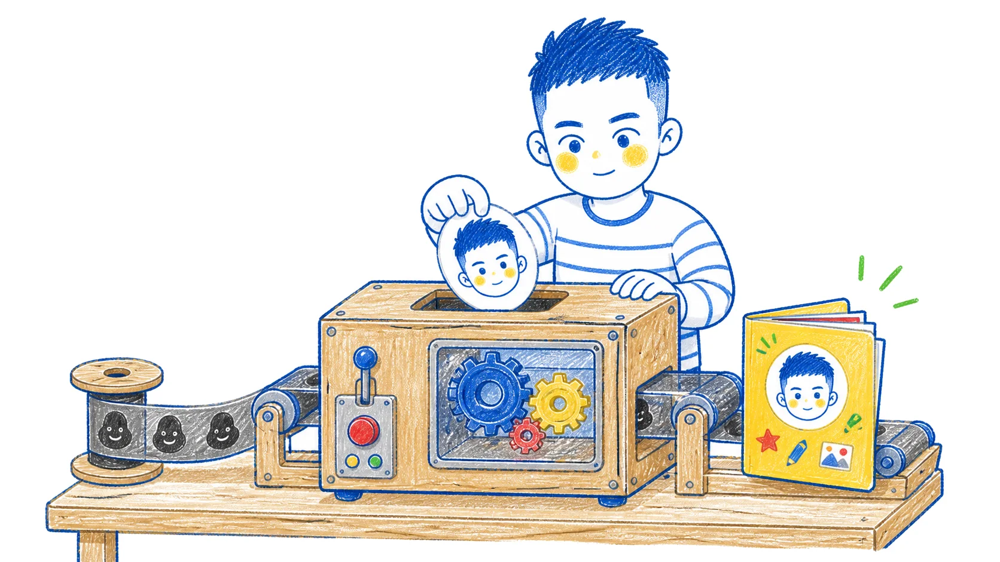
找到喜欢的 Skill 仓库，Fork 到自己的 GitHub。先不改任何东西，原样搬过来跑通。
请把【原始 Skill 仓库 URL】复制到我的 GitHub 仓库【目标仓库 URL】，并克隆到【本地目录】。先不要修改任何文件，原样跑通。完成后报告：仓库地址、本地路径、当前分支、remote、安装或运行结果，以及任何报错。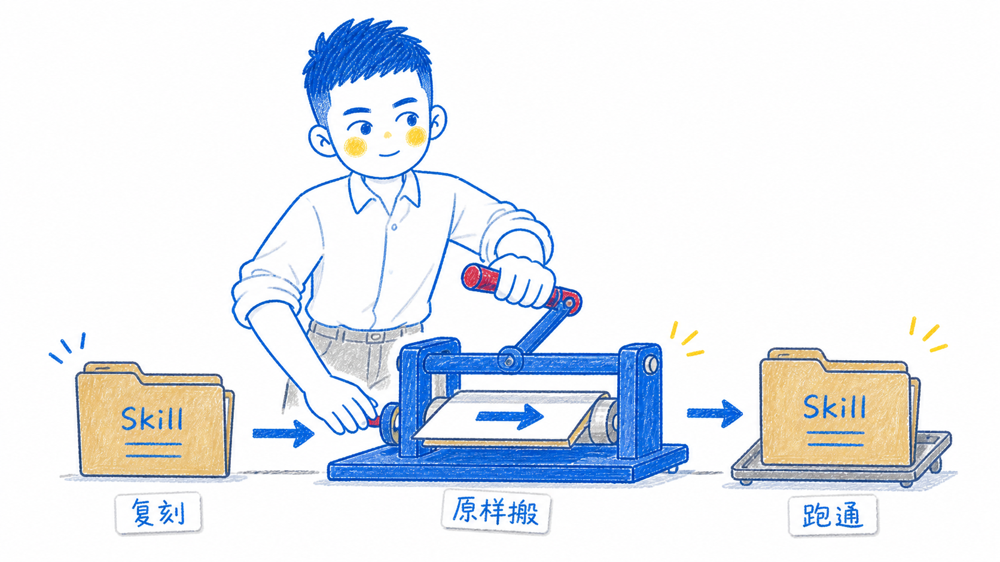
把链接给 AI，让它搞清楚哪些文件定义了 IP 形象、画风、Prompt 模板。产出一份“需要改的清单”。
把这个 Skill 全部学习一遍，不要落下任何内容：【Skill 本地绝对路径】。搞清楚哪些文件定义 IP 形象、画风、Prompt 模板、参考图、示例、README 与代理入口。输出“文件｜作用｜是否需要修改｜原因”的清单，并区分通用方法论与原 IP 专属内容。此阶段只分析，不修改。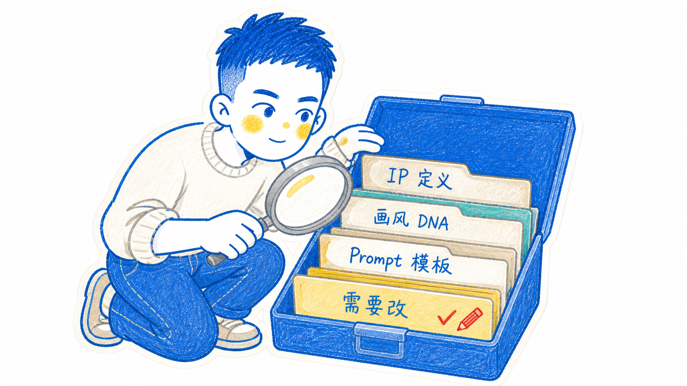
直接给成品图。AI 看图比看文字准确 10 倍。先用 AI 生成多版本，选到满意的再给。
这是我满意的 IP 成品参考图：【图片绝对路径列表】。请逐张分析清晰度、脸部特征、年龄、比例、画风、服装干扰、背景干扰与配饰依赖；选出最适合长期生图的脸部锚点和全身锚点，并明确每张图负责锁定什么。不要把背景、衣服或可拆配饰当成永久身份。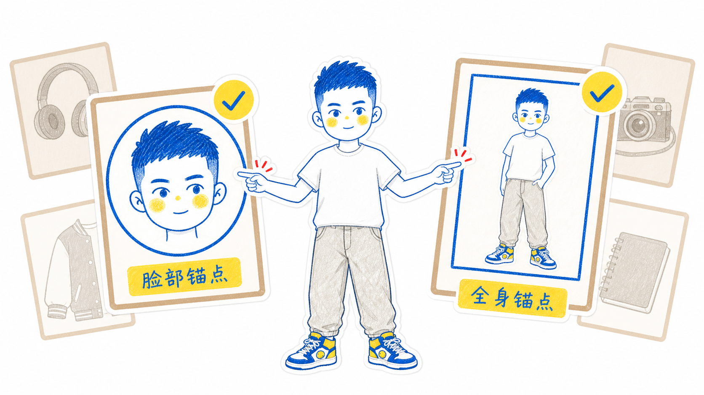
分析参考图，提炼 IP 外形、画风关键词和禁忌项，写成标准 Prompt 模板。每个 IP 都要找到“一个词识别点”。
基于【IP 参考图路径】，提炼固定外形、年龄与头身比、一词识别点、辅助识别链、可变服装和配饰、画风关键词与禁忌项。把结果写成标准 Prompt 模板，包含：Reference Roles、Identity Lock、Scene Variables、Style DNA、Composition、Forbidden 和输出规格。判断标准：遮住文字、衣服和配饰后仍能认出角色。先输出模板，不生成图片。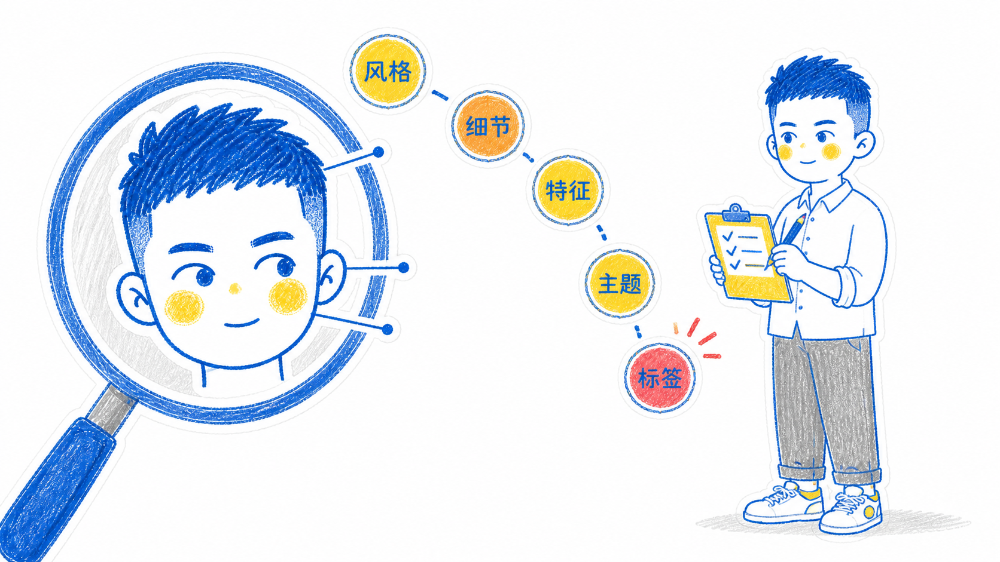
第一次大概率跑偏——正常。加上 reference image 后第二次就对了。生图必须带参考图，纯文字 Prompt 不够稳。
请同时带上【脸部参考图】和【全身参考图】，使用【标准 Prompt 模板】生成 1 张测试图。只验证 IP 身份与核心画风：脸、发型、年龄比例、一词识别点、背景、材质和配饰。若跑偏，列出失败项，只加强这些约束并再次传入 reference image 生成第二版；先不要批量生成。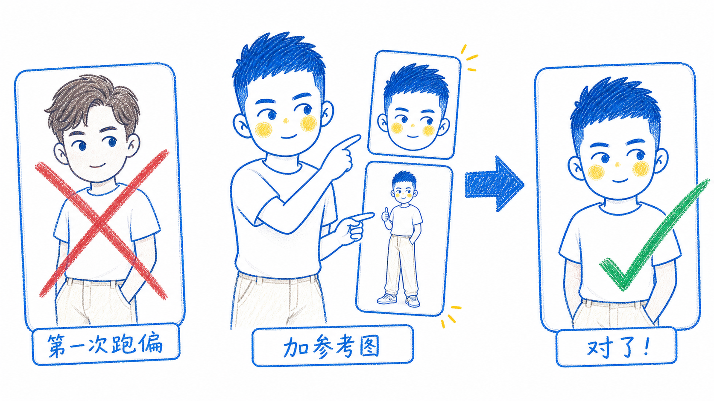
风格确认后，一次性生成 8 张不同概念的示例图替换原版。
风格已经确认。请先设计 8 条彼此不同的示例图 Shot List，覆盖不同主题、动作、构图、服装与道具；然后逐张生成 8 张独立图片替换原版示例。每次都传入同一组 reference image 并使用同一 Identity Lock。逐图保存编号文件，完成角色、风格、背景、构图、文字与配饰 QA。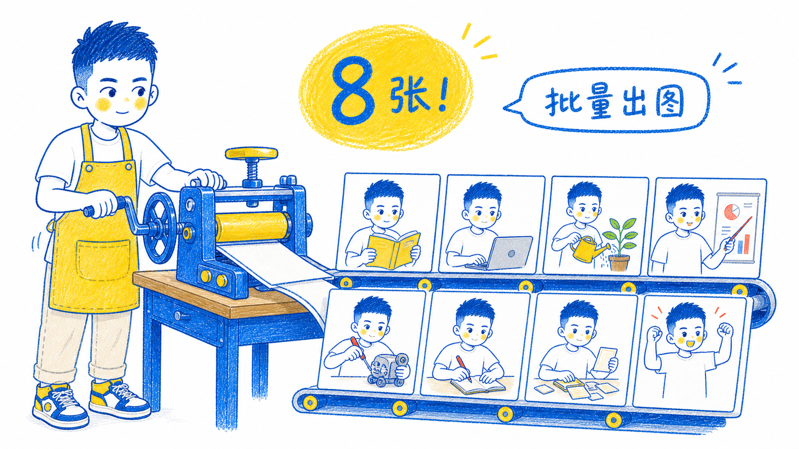
SKILL.md、IP 定义、风格 DNA、Prompt 模板、README 全部改成新 IP。只改跟风格相关的文件。
测试与示例已确认。请创建全新的【新 Skill 名称】，不要直接修改原 Skill。改写所有风格相关文件，包括 SKILL.md、IP 定义、风格 DNA、Prompt 模板、README、agents 配置、构图、QA、参考图和示例；保留通用工作流。完成后扫描旧 IP 名、旧颜色、旧路径、旧参考图与旧 Prompt 残留。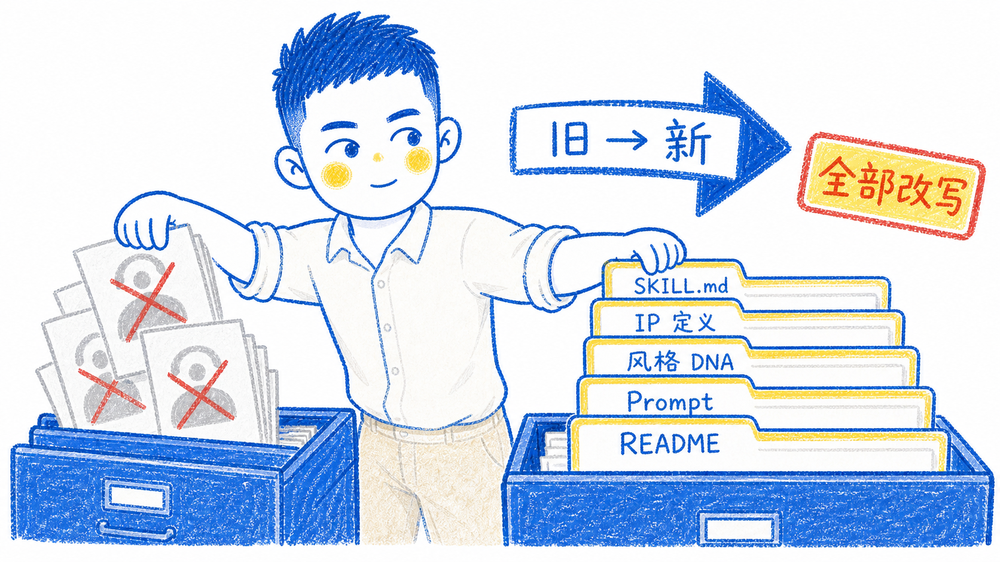
commit + push。从此拥有自己的专属 IP 配图系统——写任何文章，一句话生成风格统一的配图。
请在【新 Skill 仓库路径】只提交本次新 IP Skill 的相关文件，commit 信息写为【提交说明】，然后推送到 GitHub 的【分支】。再把同一版本安装到【本机 Skills 目录】，核对仓库版、本机安装版与远端分支完全一致。最后用【真实文章路径】调用新 Skill，输出配图路径、插入位置与 QA 结果。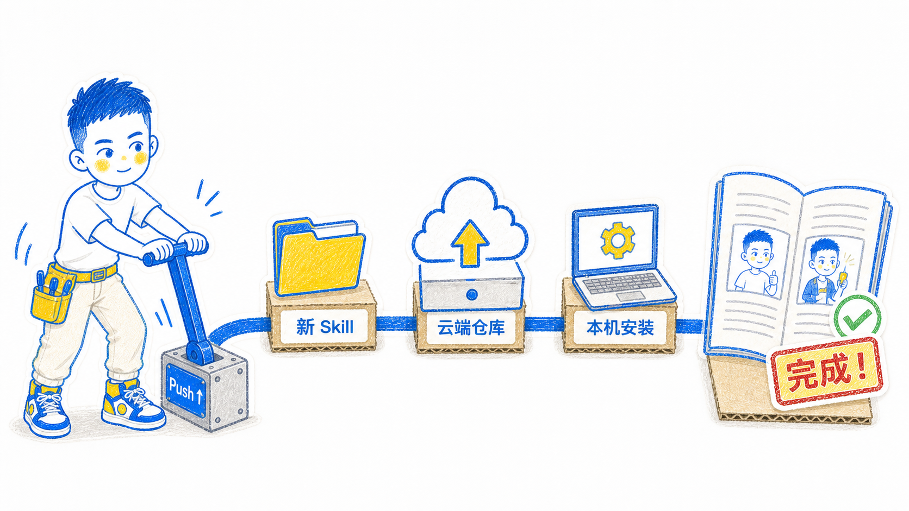
前面的 8 步讲清了方法。下面只讲这次 Bornforthis IP 插图 Skill 的真实改造：保留真实返工、真实文件、真实提交与真实文章结果。
安装这个 Skill：【原 Skill GitHub 链接】。如果本地已经存在，先检查并更新到最新版本。保留原目录与全部上游文件，不要直接在原 Skill 中改我的 IP。完成后报告实际安装路径、版本或 commit、目录树和错误信息。完整阅读【原 Skill 的 SKILL.md 绝对路径】以及该目录下所有文件，不遗漏内容。识别哪些文件定义 IP 外形、画风、颜色、Prompt、构图、QA、示例、README 和代理入口。输出：文件路径｜作用｜方法论或品牌专属｜新 Skill 是否修改｜原因。最后给出“只改风格相关文件”的清单。此阶段只分析，不修改。近景图负责锁定脸、蓝碎发、黄鼻点与蜡笔笔触；全身图负责锁定年轻成年比例、动作和白色贴纸边。
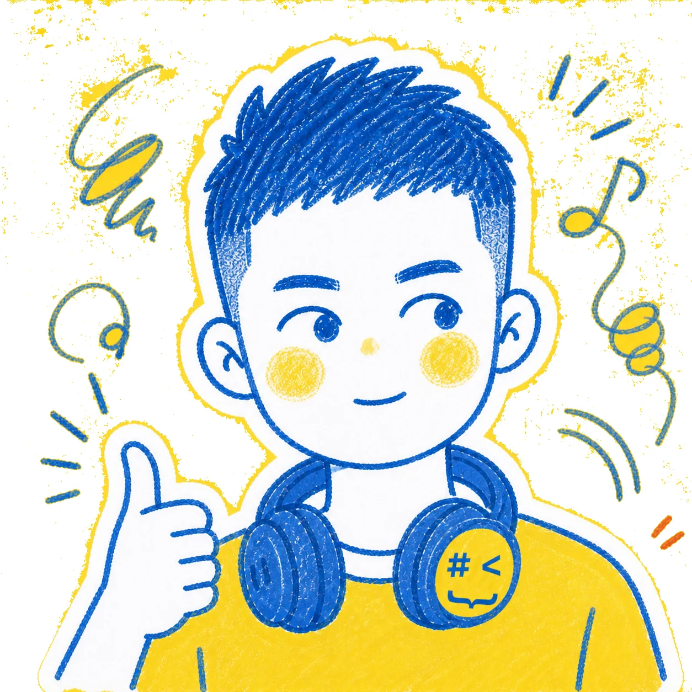
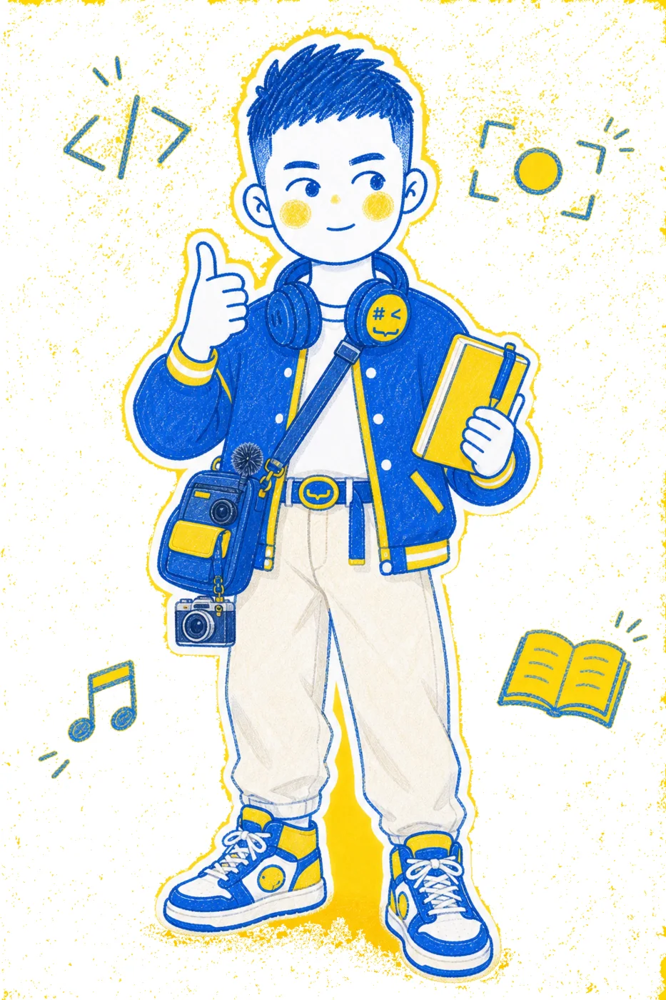
分析我提供的所有候选角色图：【图片路径列表】。选择 1 张脸部身份锚点和 1 张成年全身锚点，逐张说明保留或淘汰理由。明确每张图负责锁定什么；不要把背景、服装或可拆配饰当成永久身份。最后输出两条推荐绝对路径。稳定身份链是“蓝碎发 + 白脸 + 黄腮红”。耳机、蓝夹克、相机、相机包、笔记本都属于按场景选择的可变项。
基于【脸部锚点】与【全身锚点】，提炼 IP【名称】的固定身份。必须输出：一词识别点；辅助识别链；年龄与头身比；固定脸部和发型；可变服装 / 配饰；画风关键词；禁忌项；可用于生图的英文 Identity Lock。判断标准：遮住文字、衣服和配饰仍可认出角色。不要生成图片。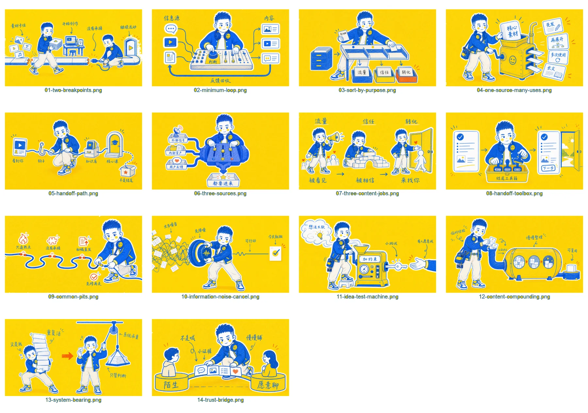
14 张都固定黄底、耳机与蓝夹克；角色像了，但身份锁错了。
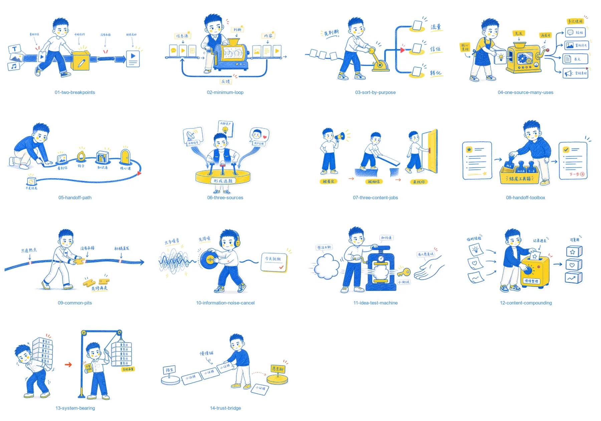
改为白底与黄腮红；只有降噪主题使用耳机，但三色被误写成封闭色板。
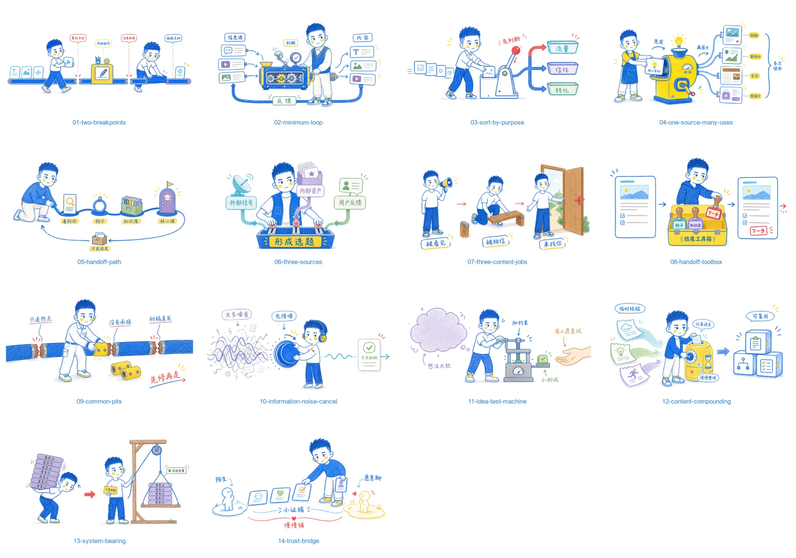
品牌色负责识别，木色、绿色、青色、紫色等内容色负责表达。
不同动作、服装、道具、隐喻和内容色一起变化，才能确认角色真的跨场景稳定。
使用已确认的 IP 定义与 Style DNA，先设计 14 条不同的 Shot List，再逐张生成 14 张独立 16:9 示例图。每次都同时传入脸部和全身锚点，锁定同一 Identity；覆盖不同动作、隐喻、服装、道具与内容辅助色。每张只解释一个核心概念，保存编号文件，并逐图检查身份、白底、画风、颜色、构图、文字和配饰纪律。bornforthis-illustrations/
├── SKILL.md · README.md · agents/openai.yaml
├── references/
│ ├── bornforthis-ip.md · style-dna.md
│ ├── prompt-template.md · composition-patterns.md
│ └── qa-checklist.md
└── assets/references + assets/examples仓库：/Users/huangjiabao/GitHub/CodexSkills/skills/bornforthis-illustrations
安装：/Users/huangjiabao/.codex/skills/bornforthis-illustrations
远端：github.com/AndersonHJB/CodexSkills · main
commit：b27483b319cb3e7010a125b9d95b4c5433e76a1f
message：feat: add Bornforthis illustration skill
结果：25 个文件；仓库版与安装版目录级 diff 无差异；两张安装锚点与工作区原图 SHA-256 一致。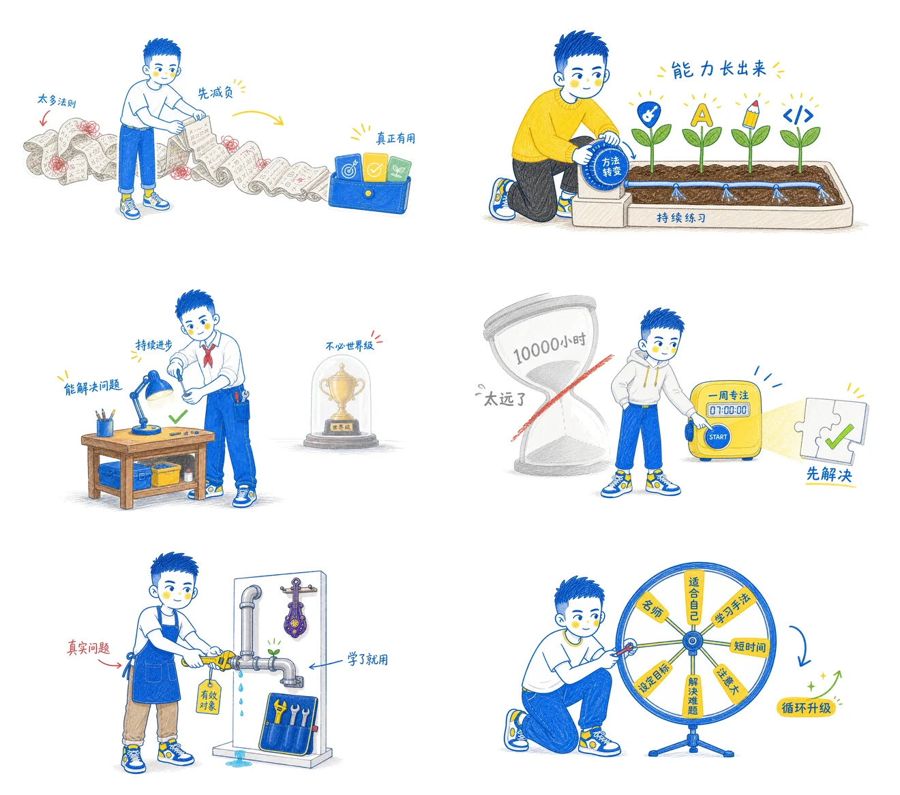
使用我的 Skill【$新 Skill 名称】，为文章【Markdown 绝对路径】生成配图。先完整阅读文章并提炼真正需要视觉化的认知锚点，先给出数量、插入位置、视觉隐喻、角色动作和构图方案；再逐张生成并保存到【输出目录】。默认不改文章正文。最后逐图 QA，并输出“文件路径 → 插入位置 → alt 文本”。先准备资料，再逐条复制 01–08。不要一开始就要求“直接生成 14 张”，也不要在测试通过之前改写全部文件。
IP 名称；清楚脸部图；成年全身图；固定外形；一词识别点。
背景；品牌色与职责；字体；气质；画风材质；禁忌。
原 Skill 链接；新 Skill 名称；本地安装路径；GitHub 仓库；实测文章。
我要把已有插图 Skill 改造成自己的独立 IP Skill。开始前不要生成图片。请按“必需 / 建议 / 可后补”检查我是否提供：IP 名称、脸部图、成年全身图、品牌色及职责、字体、气质、背景、固定特征、可变服装与配饰、禁忌、目标场景、示例数量、安装位置和发布仓库。对缺失或冲突项逐项提问，不要脑补。对新 Skill 做最终验收。逐项核验：角色身份、年龄比例、一词识别点、背景、画风、品牌色职责、辅助色语义、构图、文字、服装与配饰纪律、旧 IP 残留、内部路径、示例数量、本地安装、Git 提交和真实文章实测。每项必须给出文件或图片证据；没有实际查看证据时不得宣称通过。最后列出“已通过 / 待修复 / 阻塞”。你不需要先懂 Skill；照着 01–08 操作，每一步都看得到输入、Prompt、结果和验收。
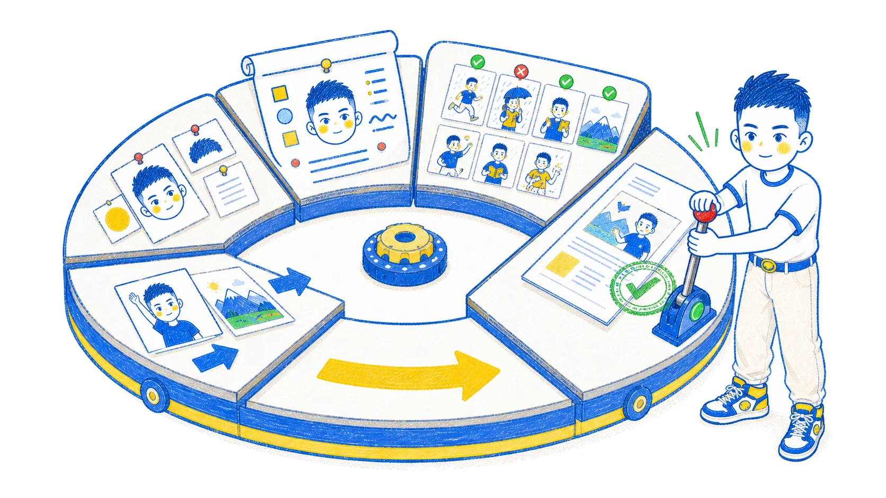
不是“换个角色名”
结合真实的 Bornforthis 改造过程，重排为 00→11 的小白复刻路线。每一步都有输入、可复制提示词、产出物与验收标准。
用“编号步骤 + 立刻看到结果”的节奏讲清方法，并补上可直接复刻的 Prompt 与验收门槛。
缺少“固定特征、可变项、禁忌项”，AI 很容易把一件衣服误认成角色身份。
IP 名称；近景脸部图；成年全身图；品牌色/比例；字体；气质；固定特征；可变服装配件；禁忌；使用场景；仓库。
AI 先回传“已收到 / 缺失 / 存疑”清单，不开始生图，不替你脑补关键身份。
Bornforthis 实例：白底；蓝黄红是主品牌体系但不是封闭色板；耳机、蓝夹克、相机包、相机、笔记本均非固定身份。
我要把一个已有插图 Skill 改造成自己的独立 IP Skill，不覆盖原 Skill。开始前先不要生成图片。请列出我必须提供的数据清单，并按“必需 / 建议 / 可后补”分类。至少检查：IP 名称、近景脸部参考图、成年全身参考图、品牌色及比例、字体、气质关键词、背景规则、固定外形、可变服装与配饰、禁忌项、目标内容场景、示例图数量、安装目录与发布仓库。对缺失或冲突项逐项提问，不擅自设定；最后输出一张可勾选的资料验收表。原 Skill 是方法论母版；你的 Skill 必须是全新目录，后续才能独立更新和回滚。
原 Skill GitHub 链接、期望安装目录。
报告真实安装路径、版本或 commit、文件数量；若已存在则先比较再更新。
安装这个 Skill：【原 Skill GitHub 链接】。如果本地已经存在，先对比远端版本并更新。完整保留上游目录名和文件，不要在原目录里做我的 IP 改造。完成后告诉我：1）实际安装路径；2）当前版本或 commit；3）目录树和文件数量；4）更新了什么；5）是否存在未解决错误。此阶段只安装和核验，不改风格文件。不要只看 SKILL.md。角色定义、构图规则、负面词和示例往往散落在 references、assets、README 与 agent 配置中。
一份“文件 → 职责 → 是否改 → 理由”的改造清单。
所有文件已覆盖；方法论骨架与品牌专属内容被明确拆开。
工作流、工具约束、QA 机制。
IP、画风、颜色、Prompt、示例。
完整阅读【原 Skill 的 SKILL.md 绝对路径】以及该 Skill 目录下的所有文件，不要遗漏任何内容。识别哪些文件定义了：IP 外形、画风、品牌色、构图、文字、Prompt 模板、负面约束、QA、示例图、README 和代理入口。输出表格：文件路径｜文件作用｜属于方法论还是品牌专属｜新 Skill 是否需要修改｜修改理由。最后给出“只改风格相关文件”的白名单与“必须原样保留”的灰名单。此阶段只分析，不修改文件。近景图负责身份，全身图负责年龄、头身比和肢体。不要让一张图同时承担所有职责。
分析我提供的全部候选角色图：【候选图路径列表】。从中选择：A）1 张最适合锁定脸部身份的近景图；B）1 张最适合锁定成年体态与全身比例的全身图。逐张说明保留或淘汰理由，尤其检查年龄漂移、脸部清晰度、头身比、服装干扰和背景干扰。明确两张锚点各自负责什么；不要把衣服、背景或可拆配饰当成永久身份。最后输出推荐的两条绝对路径。把“像不像”拆成可执行身份链：一个主识别点 + 若干辅助识别特征 + 明确禁忌。
IP 定义草案 + identity lock 段落。
摘掉耳机、换掉蓝夹克后，识别链仍成立。
基于两张锚点【脸部图路径】与【全身图路径】，提炼 IP【IP 名称】的视觉身份。必须输出：1）“一个词识别点”，只能是稳定外形而不是服装或配饰；2）辅助识别链；3）成年年龄与头身比例；4）固定外形；5）可变服装/配饰；6）画风关键词；7）禁忌项；8）可直接嵌入生图 Prompt 的英文 identity lock。判断标准：遮住衣服、拿掉耳机和道具，仍能辨认角色。只做分析与文字定义，不生成图片。“可爱、有品质、有温度”还不够；要落到背景、色彩职责、材质、字体和禁止项。
白底固定；品牌三色按品牌色内部占比理解，不是封闭色板；内容需要的肤色、植物色、木色可自然加入。
把以下品牌数据改写为可执行的 Style DNA：IP 名称【名称】；背景【白色】；主色【#2B7FD8 蓝 60%，标题/链接】；强调色【#F4D758 黄 30%，装饰/高亮】；点缀色【#E84A5F 红 10%，CTA/标签】；说明【这三色不是封闭色板，其他内容色按语义自然加入】；中文标题【汇文明朝体】；英文装饰【Fraunces】；手写注释【Caveat】；代码终端【Fira Code】；气质【可爱但有品质、手绘蜡笔感、有温度、不像 AI】。输出 MUST / SHOULD / AVOID 三层规则、颜色语义表、字体职责表、材质关键词和负面关键词。不要生成图。标准模板按“参考图职责 → 身份锁 → 场景变量 → 风格 → 色彩 → 构图文字 → 禁忌 → 输出”拼装。
整图生成模板、单点修复模板、角色加强模板。
身份区块在任何场景下都不被删改。
基于已确认的【IP 定义】和【Style DNA】，编写标准生图 Prompt 模板。模板必须依次包含：A）两张参考图及各自职责；B）不可删改的 identity lock；C）可替换的场景、动作、服装、配饰、隐喻变量；D）手绘蜡笔材质与“非 AI 感”；E）白底与品牌色语义；F）16:9 构图、安全区和文字规则；G）固定禁忌；H）输出格式。再提供“只改一个局部、不重画全图”的编辑模板，以及“角色不像时”的身份加强模板。用【方括号】标出所有需要用户替换的变量。覆盖不同动作、隐喻、服装、道具与内容色，才能验证角色是否真能跨场景稳定。
使用【我的新 IP 规则】设计并生成 14 张 16:9 示例图，用来压力测试身份与画风。先提交 14 条 shot list，每条写清：主题隐喻、角色动作、服装/配饰、主次色、构图和对应测试点；经一致性自检后再逐张生成。每次生图都必须同时传入脸部锚点与全身锚点，并使用同一 identity lock；耳机、蓝夹克、相机包、相机、笔记本都只能按场景选配。14 张要覆盖不同服装、道具、内容色与信息密度，不能只是同一姿势换背景。每张单独保存并编号，最后生成总览图。真实项目不是一次命中：V1 暴露限制，V2 修正固定配件与色板误读，V3 才形成稳定品牌规则。
先确认角色和蜡笔方向。
取消耳机、蓝夹克等永久绑定。
白底稳定；品牌色主导但内容色开放。
身份、成年比例、白底、材质、色彩职责、构图、文字、配饰误绑定。
逐张查看这 14 张图片，不要只读文件名。建立 QA 表：编号｜身份一致性｜成年比例｜白底｜手绘蜡笔感｜品牌色职责｜内容色是否自然｜构图安全区｜文字可读性｜是否把可变配饰误固定｜问题严重度｜修复动作。每张只列最影响结果的 1–3 个问题。需要修图时优先做“单目标局部编辑”，明确写出“只改什么、其他全部保持不变”；修后再次查看并记录 V1→V2→V3 的规则变化。没有视觉检查证据，不得宣称通过。只改跟风格相关的文件；原 Skill 保持可更新，新 Skill 获得独立名称、文档、参考图和 Prompt。
bornforthis-illustrations/
├── SKILL.md
├── README.md
├── agents/openai.yaml
├── references/
│ ├── bornforthis-ip-definition.md
│ ├── style-dna.md
│ └── prompt-template.md
└── assets/ # 两张身份锚点以【原 Skill 路径】为方法论母版，创建全新的【新 Skill 名称】目录；禁止直接修改原 Skill。仅改写与品牌风格相关的文件，包括但不限于 SKILL.md、README、agents/openai.yaml、IP 定义、Style DNA、Prompt 模板、参考图和示例说明；通用工作流、工具规则与 QA 骨架保持一致。把已确认的 V3 规则写入新 Skill。完成后执行残留扫描，检查原 IP 名、旧品牌色、旧参考图路径和旧示例是否仍出现；再验证所有内部链接与资源路径。输出实际修改清单、保留清单和扫描结果。安装验证和 Git 发布都成功，才算从“文件夹”升级为真正可复用的 Skill。
Skill 可被发现、SKILL.md 可读、引用资源存在。
目标仓库 main 已推送；commit SHA 与变更清单可追溯。
安装新 Skill【新 Skill 目录或仓库地址】到本机技能目录，并验证系统能够发现它。然后把这套新 Skill 推送到【GitHub 仓库 URL】的【main】分支。操作前先检查 git status、当前分支、remote 和用户已有改动；只提交本次新 Skill 的相关文件，不覆盖无关内容。提交信息写清“新增【IP 名称】插图 Skill”。推送后返回：安装路径、验证结果、commit SHA、远端分支和变更文件列表。若权限或冲突阻塞，停止并明确报告，不做破坏性处理。真实内容会检验“文章理解、视觉隐喻、角色一致性、排版留白”能否同时成立。
文章 Markdown + 新 Skill。
不是插图数量越多越好；每张都对应明确认知锚点。
使用我的 Skill【$新 Skill 名称】，为文章【Markdown 绝对路径】生成配图。先完整阅读文章，提炼读者最需要被视觉化的认知锚点；先给出建议配图数量、每张对应段落、视觉隐喻、是否需要角色、构图与预留文字区，不要立刻批量生成。确认方案后逐张生成，全部使用新 Skill 的身份锁、Style DNA 与 Prompt 模板；每张保存到【输出目录】并逐图 QA。默认不改文章正文，最后给出“图片路径 → 建议插入位置 → alt 文本”的清单。它不会跳过关键检查点：每阶段先报告产出与风险，再进入下一阶段。
换衣服、换道具、换主题后仍一眼认出；视觉规则可解释；文件可复用；真实文章可调用。
请把【原 Skill GitHub 链接】改造成我的全新独立 IP Skill【新 Skill 名称】，但绝对不要直接修改原 Skill。我的资料是：【IP 名称】【脸部参考图路径】【全身参考图路径】【品牌色与比例】【字体】【气质关键词】【固定特征】【可变服装配饰】【禁忌】【目标仓库】。按 00–11 分阶段执行：资料审计→安装原版→完整学习所有文件→选择双锚点→提炼“一词识别点”与 identity lock→写 Style DNA→写标准 Prompt 模板→设计并生成 14 张压力测试图→逐图 QA 并迭代到稳定版本→仅改写风格相关文件创建新 Skill→本地安装并推送 GitHub→用真实文章做正向实测。每阶段都必须输出：输入检查、实际产物、文件路径、验收结果、遗留风险；关键资料缺失时先问我，不得脑补；没有查看图片或文件证据时不得宣称通过。所有提示词、路径和规则都要保存在新 Skill 内，确保下一次可以直接复用。以 Bornforthis 的真实改造过程为例：不是“换一张头像”，而是把角色身份、画风、Prompt、示例、QA 与安装发布一起做成可复用系统。
保留 ian-xiaohei-illustrations 作为上游参照。
从多个造型方案中收敛面部与全身锚点。
白底、品牌三色层、开放辅助色和非固定配件。
用跨场景示例做身份与风格压力测试。
安装新 Skill、推送 main，再为 01.md 生成 6 张配图。
最终策略：创建全新 Skill，保留原版；不要直接覆盖上游。
耳机、蓝夹克、相机、相机包、笔记本都不能承担身份识别。
一个好角色不是把参考图所有东西都永久化。真正稳定的是面部与比例；服装和道具必须跟随场景。
年轻成年男性、4.5–5 头身、蓝碎发、纸白方圆脸、小黄鼻点、两枚黄腮红、闭口微笑。
耳机、夹克、相机、相机包、笔记本，以及衬衫、围裙、工作服等全部按主题选用。
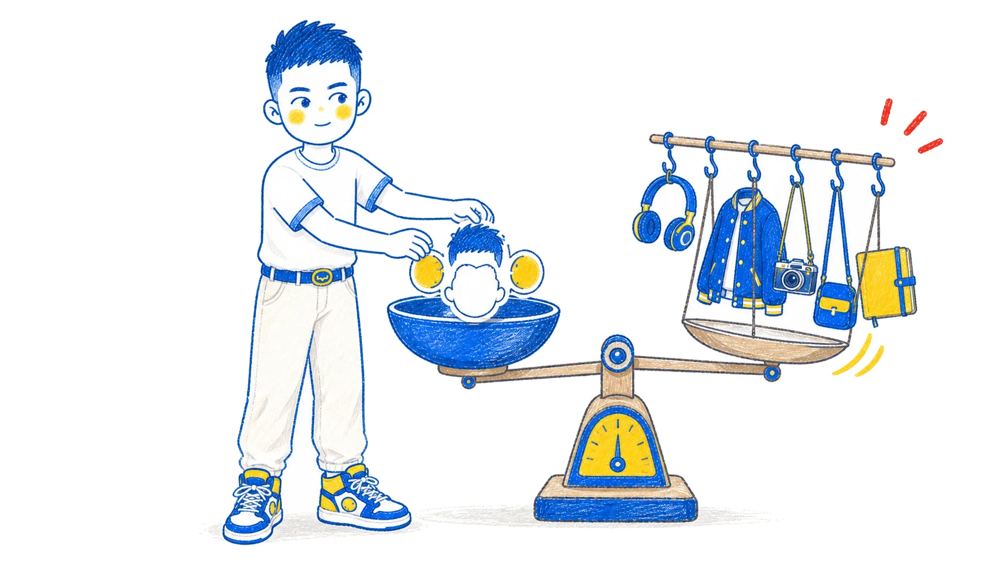
插图固定纯白 #FFFFFF；蜡笔与彩铅颗粒只存在于有色笔触内部，保留断笔、小白缝和不规则贴纸边。
可爱但有品质、有温度、不像 AI；一图一隐喻、角色亲手行动、40%–60% 主体、大量留白。
汇文明朝体负责中文标题，Fraunces 负责英文装饰，Caveat 负责批注，Fira Code 负责代码与终端。
60 / 30 / 10 是三个品牌色彼此的视觉层级，不是整张图的像素配额。
真正的风险不是少改一个角色名，而是旧画风、旧色彩或旧 QA 在某个 reference 里继续生效。
SKILL.mdreferences/bornforthis-ip.mdreferences/style-dna.mdreferences/prompt-template.mdreferences/composition-patterns.mdreferences/qa-checklist.mdagents/openai.yaml + README + assets/每次生成都重复参考图职责、身份锁、场景动作、画风、色彩层、构图与禁忌。这样跨场景时，角色才不会漂移。
一个主题 · 一个动作 · 一个隐喻
V1 先证明角色能迁移到 14 个场景；V2 修正黄色满底；V3 再修正“只有三色”的误解，让材料色和状态色回到画面。
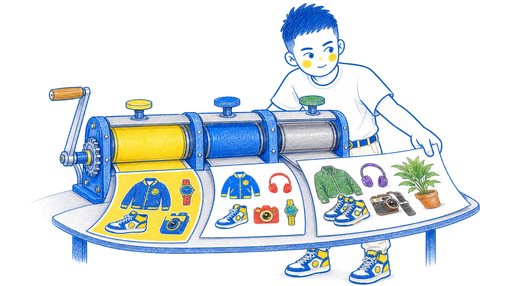
身份和构图成立，但参考图的黄色背景与配饰影响仍然明显。
纯白背景稳定，但部分真实物件被迫只用蓝黄红，语义受损。
品牌识别继续稳定，同时允许木色、绿色、紫色、灰色等合理内容色。
一张图只能证明模型偶然成功。14 张不同结构、动作、服装和内容色，才是在测试这套 Skill 是否能稳定复用。
短蓝碎发、纸白脸、小黄鼻点、两枚黄腮红、成年比例。
纯白背景、蜡笔颗粒、贴纸边、大留白、一个物理隐喻。
品牌蓝是主线；辅助色有语义，不彩虹化，也不强制三色化。
耳机、夹克、相机、相机包和笔记本不默认继承。
标签少、短、可读；严格字体要求时生成无字底图再由 HTML 排版。
真实案例：文章图里意外出现相机，只做“移除相机”的局部编辑，其它全部保持不变。
最终仓库中的提交是真实存在的：b27483b，提交信息为 feat: add Bornforthis illustration skill，共加入 25 个文件。
对《00-你可以得到什么？》提炼 6 个认知锚点：法则过载、跨域生长、高效不等于世界级、一万小时迷思、真实问题、七关键词飞轮。
一个专属 IP Skill 的完成标准：换文章、换动作、换服装、换内容色之后，仍然一眼认得出，而且每张图都服务内容。